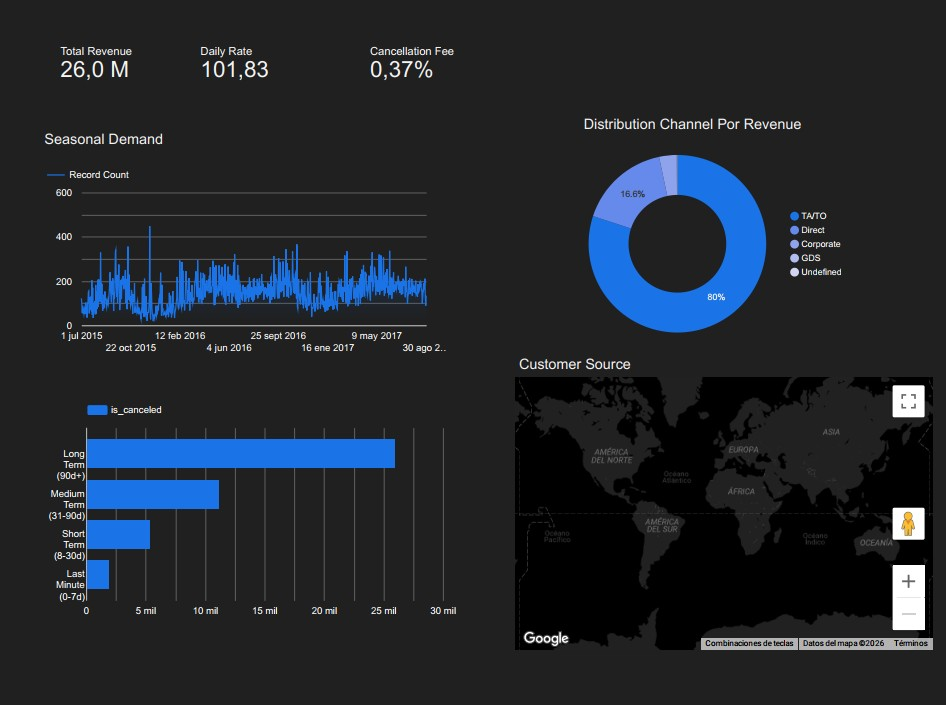

Dashboard de Análisis Operativo y Predictivo – Sector Hospitality
Looker Studio | Python (Pandas) | Análisis de Revenue Management

Descripción del Proyecto
El dataset de Hotel Bookings presenta un volumen de datos masivo (más de 119,000 registros), lo que permite demostrar la capacidad para manejar Big Data y resolver problemas complejos como la tasa de cancelación. Este dashboard es una herramienta vital para cualquier gerente de hotel, permitiendo optimizar la demanda, predecir la ocupación real y mejorar la rentabilidad.
Responsabilidades y Acciones
Ingeniería de Datos (ETL)
Procesamiento de un dataset de 119,390 registros. Consolidación de dimensiones temporales (Año/Mes/Día) en una línea de tiempo única y creación de métricas financieras personalizadas.
import pandas as pd
df = pd.read_csv('hotel_bookings 2.csv')
# 1. Crear fecha completa de llegada
month_map = {'January':1, 'February':2, 'March':3, 'April':4, 'May':5, 'June':6,
'July':7, 'August':8, 'September':9, 'October':10, 'November':11, 'December':12}
df['arrival_month_num'] = df['arrival_date_month'].map(month_map)
df['arrival_date'] = pd.to_datetime(dict(year=df.arrival_date_year, month=df.arrival_month_num, day=df.arrival_date_day_of_month))
# 2. Calcular noches totales e ingresos reales
df['total_nights'] = df['stays_in_weekend_nights'] + df['stays_in_week_nights']
df['revenue'] = df.apply(lambda x: x['adr'] * x['total_nights'] if x['is_canceled'] == 0 else 0, axis=1)
# 3. Guardar versión para Looker
df.to_csv('cleaned_hotel_bookings.csv', index=False)Análisis de Revenue
Cálculo de ADR (Average Daily Rate) y segmentación de ingresos reales excluyendo cancelaciones para una estimación financiera precisa.
Segmentación de Comportamiento
Creación de variables de "Lead Time" (Antelación de reserva) para identificar patrones de reserva y riesgos de cancelación.
Logros e Insights Clave
-
Monitorización de Cancelaciones
Identificación de una tasa de cancelación promedio del 37%, permitiendo al equipo de operaciones prever pérdidas de inventario.
-
Optimización de Canales
Detección de que el canal Online TA genera el mayor volumen de ingresos pero también la mayor inestabilidad, sugiriendo una transición hacia estrategias de reserva directa.
-
Geolocalización de la Demanda
Implementación de mapas de calor para identificar que el mercado de Portugal (PRT) y Reino Unido (GBR) son los principales motores de reserva, optimizando el presupuesto de marketing internacional.
Caso de Estudio: Optimización de la Demanda Hotelera
-
1. El Problema (Contexto)
La gerencia de una cadena hotelera (City Hotel y Resort Hotel) enfrentaba dificultades para predecir su ocupación real. A pesar de tener un alto volumen de reservas, las cancelaciones inesperadas generaban ineficiencias en la contratación de personal y desperdicio en suministros de alimentos. No existía una visión clara de qué mercados eran los más rentables ni con cuánta antelación reservaba el cliente "ideal".
-
2. El Objetivo
Crear una herramienta de Business Intelligence que permitiera al departamento de Revenue Management:
- Visualizar los ingresos reales frente a los proyectados.
- Identificar los factores que disparan las cancelaciones.
- Analizar la estacionalidad para ajustar precios (ADR) dinámicamente. -
3. La Solución (El Dashboard)
Se diseñó un panel interactivo en Looker Studio con tres capas de análisis:
- Capa Financiera: KPIs de ingresos y tarifas diarias.
- Capa Logística: Análisis de la antelación de reserva (Lead Time) y su correlación con las cancelaciones.
- Capa Demográfica: Mapa de origen de huéspedes y tipos de clientes (Transitorios vs. Corporativos). -
4. Resultados y Hallazgos
Hallazgo 1: Las reservas realizadas con más de 90 días de antelación tienen una probabilidad de cancelación un 20% superior a las de "último minuto", lo que justifica políticas de depósito no reembolsables para reservas a largo plazo.
Hallazgo 2: El Resort Hotel mantiene un ADR más estable, mientras que el City Hotel es extremadamente sensible a la estacionalidad, lo que sugiere la necesidad de ofertas tipo "Flash Sales" en meses de baja demanda.